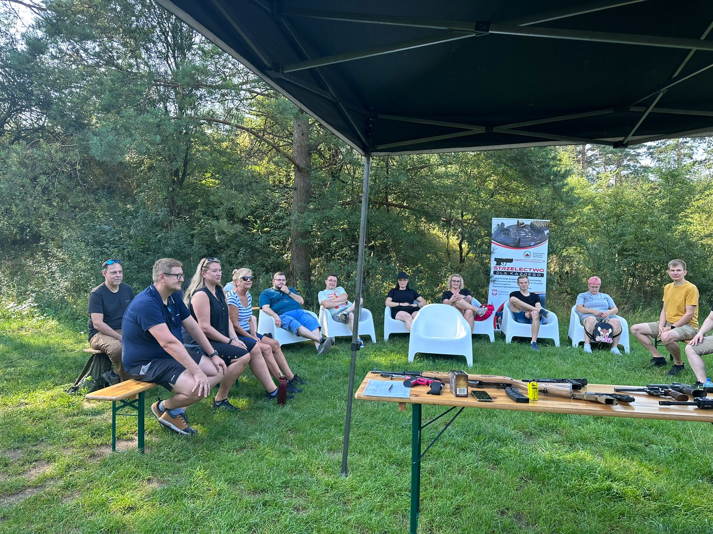

Szkolenia specjalistyczne
Cykliczne kursy i warsztaty prowadzone przez instruktorów z wieloletnim doświadczeniem w służbach mundurowych i sporcie strzeleckim.

Strzelectwo sportowe | PZSS | OZSS
Rozwijamy strzelectwo sportowe, prowadzimy szkolenia specjalistyczne i wspieramy członków na każdym etapie — od patentu strzeleckiego po licencję zawodniczą PZSS.
Oferta dla Ciebie — jeśli masz przydzieloną broń służbową, a chcesz mieć broń do celów kolekcjonerskich: wypełnij wniosek online — otrzymasz gotowy dokument, który wyślesz do Wydziału Postępowań Administracyjnych Komendy Wojewódzkiej Policji (WPA).
O nas
Towarzystwo Miłośników Strzelectwa „Sagittarius” zajmuje się wszechstronnym rozwojem i upowszechnianiem dyscyplin strzelectwa sportowego. Zrzeszamy osoby zajmujące się strzelectwem, prowadzimy szkolenia specjalistyczne i propagujemy strzelectwo jako formę integracji i rekreacji.
Nasza kadra to pasjonaci strzelectwa — praktycy, instruktorzy i sędziowie wywodzący się z Policji, Wojska, Straży Granicznej, Służby Więziennej oraz innych formacji mundurowych. To także eksperci prawa broni i uprawnieni rusznikarze.
Pomagamy w uzyskaniu patentu strzeleckiego, licencji zawodniczej PZSS oraz przygotowaniach do pozwolenia na broń sportową i kolekcjonerską.
Oferta klubowa
Cykliczne kursy i warsztaty prowadzone przez instruktorów z wieloletnim doświadczeniem w służbach mundurowych i sporcie strzeleckim.
Organizujemy zawody dla osób czynnie uprawiających strzelectwo sportowe dzięki członkostwu w Polskim Związku Strzelectwa Sportowego.
Pomoc w uzyskaniu patentu strzeleckiego, licencji zawodniczej PZSS oraz monitorowanie etapów pozwolenia na broń.
Realizujemy projekty edukacyjne we współpracy z instytucjami oświatowymi i wychowawczymi w regionie opolskim.
Jak dołączyć
Uzupełnij formularz online. System przygotuje deklarację członkostwa i wyśle potwierdzenie na Twój e-mail.
Dołącz dowód wpłaty wpisowego oraz zaakceptuj oświadczenie o niekaralności. Deklarację członkowską pobierzesz w sekcji dokumentów powyżej.
Zarząd rozpatruje wniosek uchwałą. Po przyjęciu otrzymujesz potwierdzenie członkostwa i dostęp do aktywności klubowych.
Członkostwo
Wypełnij formularz — przygotujemy deklarację i prześlemy ją do weryfikacji zarządowi. Po zatwierdzeniu otrzymasz potwierdzenie członkostwa. Dodamy Cię też do grupy na WhatsApp — to zapewnia szybką i jednoczesną informację dla naszych klubowiczów. Maksymalnie prosto i przejrzyście. Po każdym etapie otrzymasz informację mailową. Otrzymasz także dostęp do strefy klubowej — tam wydrukujesz wszystkie dokumenty niezbędne przy składaniu wniosku o pozwolenie na broń.
FAQ
Pełnoletni obywatel RP z pełną zdolnością do czynności prawnych, korzystający z pełni praw publicznych, zainteresowany strzelectwem i gotowy wspierać cele stowarzyszenia — zgodnie ze statutem TMS „Sagittarius”.
Deklaracja członkostwa (do pobrania w formularzu), rekomendacja członka klubu oraz oświadczenie o niekaralności (wymagane przy wniosku o pozwolenie na broń).
Tak. Prowadzimy szkolenia i wspieramy członków w procesie uzyskania patentu strzeleckiego oraz licencji zawodniczej PZSS, a także monitorujemy etapy pozwolenia na broń sportową i kolekcjonerską.
Zarząd rozpatruje wniosek w drodze uchwały. Czas zależy od kompletności dokumentów — po wysłaniu formularza otrzymasz informację o brakujących elementach.
Statut i polityka prywatności są dostępne do pobrania: Statut TMS „Sagittarius”, Polityka prywatności (RODO). Formularz online generuje deklarację automatycznie na podstawie podanych danych.
Kontakt
Napisz do nas — odpowiemy w sprawie wniosków, dokumentów i terminów zajęć klubowych.